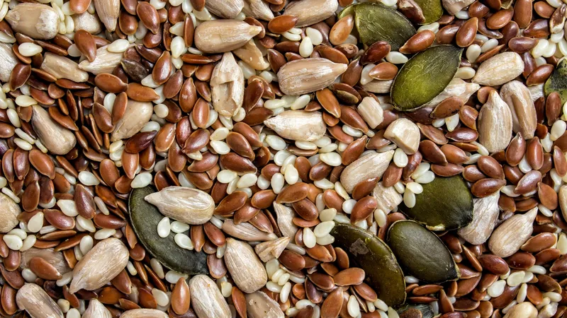
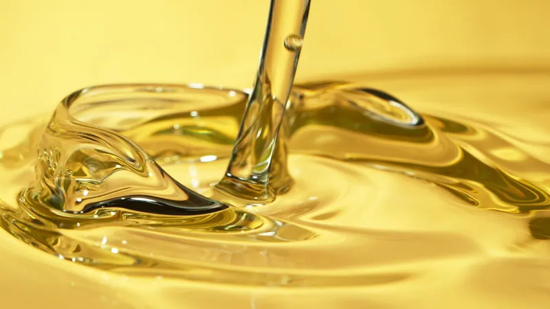
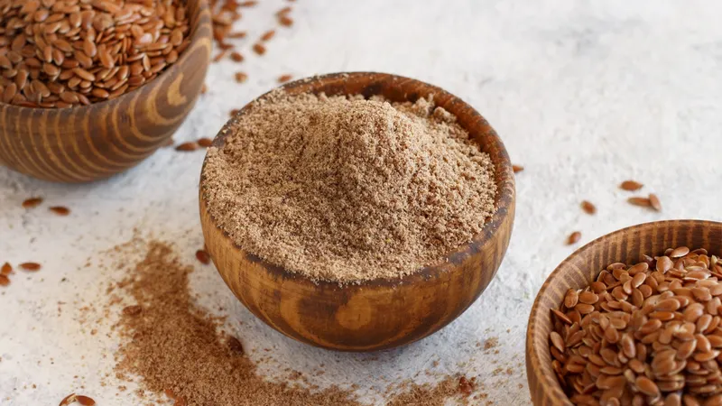
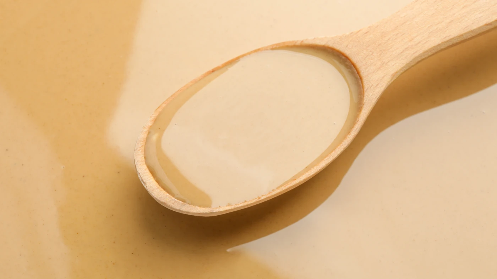

Wer wir sind
Agros-98 AD ist ein bulgarisches Agraunternehmen, das Samen, kaltgepresste Öle und Spezialmehle an Lebensmittelhersteller in ganz Europa und darüber hinaus produziert und exportiert.
Gegründet 1994 und mit Hauptsitz in Suworowo, Provinz Warna, kontrollieren wir die gesamte Lieferkette — von der Kultivierung pestizidfreier Pflanzen auf eigenem Ackerland über die mechanische Kaltpressung bis hin zur endgültigen Verpackung und Exportdokumentation.
Unsere Produktionsanlage in Suworowo verarbeitet Sonnenblumen, Koriander, Leinsamen, Kürbis und Walnüsse nach strengen Lebensmittelsicherheitsprotokollen. Jede Charge ist vom Feld bis zum Etikett rückverfolgbar.




Wir kultivieren Sonnenblumen, Koriander, Leinsamen und andere Kulturen auf Land in der Region Warna — keine Drittbeschaffung, vollständige Rückverfolgbarkeit vom Samen bis zur Lieferung.
Unser Anbauprogram verwendet minimale Pestizidmengen und folgt integrierten Schädlingsmanagementpraktiken, was saubereres Rohmaterial für Lebensmittelanwendungen produziert.
Von der Reinigung und Kaltpressung bis zur Verpackung und Etikettierung findet jeder Schritt der Wertschöpfungskette in unserer eigenen Anlage in Suworowo statt — keine ausgelagerte Verarbeitung.
Wir liefern vollständige Dokumentation: COA, Ursprungszeugnis, Pflanzenschutzzertifikate und EUR.1-Präferenzursprungsdokumente für jede Lieferung an EU-Käufer.
Lassen Sie uns Ihre Anforderungen besprechen — Mengen, Verpackung, Spezifikationen und Lieferbedingungen.